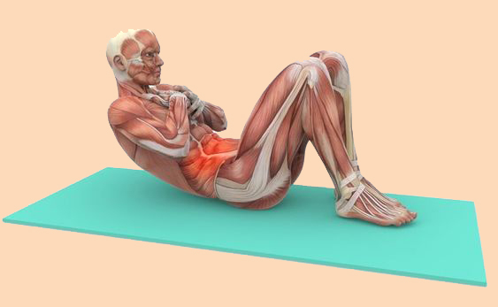

Los músculos en el cuerpo humano pueden clasificarse en función de su control y funcionamiento en tres categorías principales: músculos voluntarios, músculos involuntarios y músculos autónomos.
Músculos voluntarios: También conocidos como músculos esqueléticos, están bajo el control consciente y voluntario del sistema nervioso central, lo que significa que podemos controlarlos para realizar movimientos específicos.
Los músculos esqueléticos constituyen la mayoría de los músculos en el cuerpo y están asociados con el movimiento corporal. Son aquellos que permiten la flexión y extensión de los brazos y las piernas, así como los responsables de movimientos faciales y de expresión.
Músculos involuntarios: Los músculos involuntarios, también conocidos como músculos viscerales, no están bajo control consciente y voluntario. Estos músculos son controlados por el sistema nervioso autónomo y desempeñan un papel crucial en las funciones internas del cuerpo.
Se encuentran en órganos internos como el corazón (músculo cardíaco) y el tracto gastrointestinal (músculo liso). El músculo cardíaco permite que el corazón lata de manera rítmica, mientras que el músculo liso facilita la contracción y el movimiento de los órganos internos, como en la digestión.
Músculos autónomos: Los músculos autónomos son controlados por el sistema nervioso autónomo y funcionan de manera automática sin intervención consciente. Además del músculo cardíaco y el músculo liso mencionados anteriormente, algunos músculos autónomos también se encuentran en los vasos sanguíneos (músculo vascular) y en las vías respiratorias (músculo bronquial). Estos músculos se contraen y relajan de manera reflexiva para regular el flujo sanguíneo y la respiración, respectivamente.
